name: title class: middle, center, dark <center> <embed src="images/title.svg" type="image/svg+xml" height="100px" align="center" style="border: 0px solid lightgray;"/> </center> --- name: incBullet class: light # Agenda 1. What makes a good experiment? (a historical example) 1. Confirmation bias and the dangers of our own thinking 1. Correlational versus Experimental studies 1. Alignments between data and theory 1. What makes a good research question? 1. Some info about final projects --- class: light, middle, center <img src="images/circle.svg"> ###What makes a good experiment? --- class: light # .black[Example:] Where does life come from? - Since the 4th century B.C. the theory of _spontaneous generation_ dominated thinking about this question - Nile River floods - Enriches soil - Frogs appear - **Therefore** frogs must come out of the mud <center> 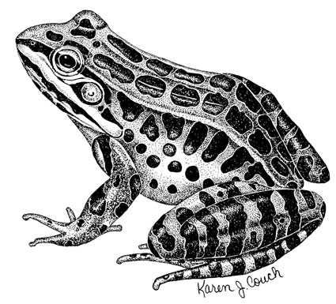 </center> --- class: light # Francesco Redi (1668) <br><br> <center> 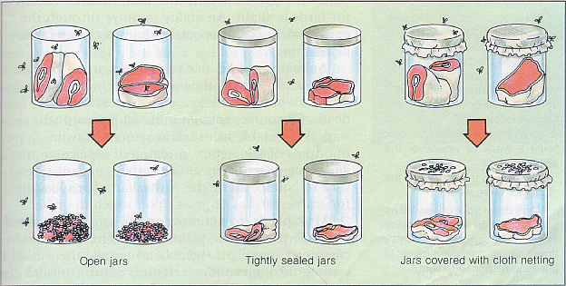 </center> --- class: light # John Needham (1745) .col1[ <center> <br><br> 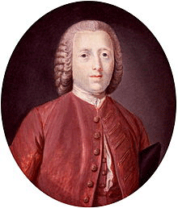 </center> ] .col2[ - Boiled broth (thought at the time to kill any microorganisms), then let it sit out - Still found evidence of micro-organisms - Revived the spontaneous generation hypothesis - Rigorously verified and examined by his peers and many agreed with him ] --- class: light # Pasteur solved it! (1859) .col1[ <center> <br><br> 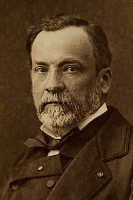 </center> ] .col2[ <center> <br><br> <img src="images/pasteur_exp.png" width="340"> </center> ] --- class: light # What went wrong and why? - A failure to detect .blue[confounding] variables. .infobox[ **Confounding variable** In statistics, a confounding variable (also confounding factor, hidden variable, lurking variable, a confound, or confounder) is an extraneous variable in a statistical model that correlates (positively or negatively) with both the dependent variable and the independent variable. - <a href="http://en.wikipedia.org/wiki/Confounding">WP</a> ] - Was it sloppy science? Hard to say. The relevant variables themselves were poorly understood. - **Big challenge** in cognitive science. What information in the environment do people use and how? Difficult to control, must proceed with extreme caution. --- name: wason1 class: light, bottom, center # The number concept game .small[I have a concept in mind involving triplets of numbers. Your job is to guess the concept by asking questions. To start will I will tell you that the triplet 2,4,6 belongs to the concept. Now, try entering other triplets. Items marked green are in the concept, while items marked red are not. Try entering other triplets to determine what you think the rule I am considering is.] <hr> .large[ .green[**(2, 4, 6)**] <br> ] <br /> <br /> Try it (to enter the above triplet just type '2,4,6' without quotes or spaces): .large[ <input type="text" maxlength="9" size="10" id="wason1entry"/> <input type="submit" value="submit" onclick="javascript:wason1add();"/><input type="submit" value="i'm done/give up"onclick="javascript:wason1done();" /> ] --- class: light # Typical result - People usually first think the concept is "even, increasing numbers" - They then try to test items like (8, 10, 12)... is that one you tried or thought of? - However, imagine that the first hypothesis (even increasing numbers) is correct. Then these types of test items are unlikely to generate anything other than a long sequence of "true" responses thus little is learned. - No amount of positive testing can ever completely support a hypothesis or rule - Instead people should try _disconfirmatory_ examples such as (3, 2, 1) which are predicted to be 'false' under the hypothesis. --- name: wason2 class: light, middle, center # Claim: if vowel on one side, then even number on the other <div class="carddeck"> <div class="card">E</div> <div class="card">K</div> <div class="card">4</div> <div class="card">7</div> </div> --- class: light # Correct Answer - Looking at E is good... if there isn't an even number on the other side it falsifies the rule, otherwise not. - K we have no prediction given the rule, so either outcome (even/odd) has no bearing on the rule - 4 is bad because if you look at 4 it could be a vowel but if it isn't a vowel there's nothing wrong with that. - 7 is good because if even it will mean the rule is false. If not even then nothing new learned. <div class="carddeck"> <div class="card">E</div> <div class="card">K</div> <div class="card">4</div> <div class="card">7</div> </div> --- class: light, middle, center # Typical empirical results <table align="center"> <tr> <td>E and 7 (right answer)</td> <td>0%</td> </tr> <tr> <td>E</td> <td>50%</td> </tr> <tr> <td>E and 4</td> <td>20%</td> </tr> <tr> <td>K and 7</td> <td>15%</td> </tr> <tr> <td>7</td> <td>5%</td> </tr> <tr> <td>K</td> <td>5%</td> </tr> <tr> <td>All cards</td> <td>5%</td> </tr> </table> --- class: light # What is going on? Tendency of humans (scientists included) to seek positive examples of a theory rather than the things that would refute it. <br><br> .infobox[ **Confirmation Bias** Confirmation bias (also called confirmatory bias or myside bias) is a tendency of people to favor information that confirms their beliefs or hypotheses. Experiments have repeatedly found that people tend to test hypotheses in a one-sided way, by searching for evidence consistent with the hypothesis they hold at a given time. Rather than searching through all the relevant evidence, they ask questions that are phrased so that an affirmative answer supports their hypothesis. They look for the consequences that they would expect if their hypothesis were true, rather than what would happen if it were false. - <a href="http://en.wikipedia.org/wiki/Confirmation_bias">WP</a> ] --- class: light, middle, center # Claim: if you are drinking alcohol, then you have to be 21 <div class="carddeck"> <div class="card">16</div> <div class="card">22</div> <div class="card">beer</div> <div class="card">water</div> </div> --- class: light, middle, center # Claim: if you are drinking alcohol, then you have to be 21 <div class="carddeck"> <div class="card">.green[16]</div> <div class="card">.red[22]</div> <div class="card">.green[beer]</div> <div class="card">.red[water]</div> </div> --- class: light, middle, center <img src="images/circle.svg"> <br> # Ok, what *should* we be doing? --- class: light .col1[ 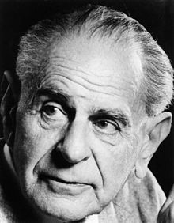 ] .col2[ # Falsification Karl Popper (1935) - "The Logic of Scientific Discovery" ] --- class: light .quote[ Popper argued strongly against the latter, holding that scientific theories are abstract in nature, and can be tested only indirectly, by reference to their implications. He also held that scientific theory, and human knowledge generally, is irreducibly conjectural or hypothetical, and is generated by the creative imagination in order to solve problems that have arisen in specific historico-cultural settings. Logically, no number of positive outcomes at the level of experimental testing can confirm a scientific theory, but a single counterexample is logically decisive: it shows the theory, from which the implication is derived, to be false. Popper's account of the logical asymmetry between verification and falsifiability lies at the heart of his philosophy of science. It also inspired him to take falsifiability as his criterion of demarcation between what is and is not genuinely scientific: a theory should be considered scientific if and only if it is falsifiable. - [WP](http://en.wikipedia.org/wiki/Karl_Popper) ] --- class: light, middle ### Falsifiable theories can _in principle_ be ruled out by performing a critical experiment. --- class: light .infobox[ **Operational defintion** Some observable phenomena that is associated with a hypothesis. Cognitive scientists must propose hypothesis about how the mind works, and also propose operational definitions (some observable phenomena that would be predicted from that hypothesis). ] **How do we measure** - How angry you feel? - How social a person you are? - How good your memory is? - How good at decision making you are? - How smart you are in general? --- class: light # Correlational vs. Experiment Studies Suppose you notice a decline in stork populations **and** a decline in human birth rates. Ah ha! Babies must come from storks!! <br><br><br> <center> 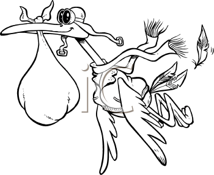 </center> --- name: storkexample class: storkexample, light 1. Select storks and babies 2. Expose only storks to pollution 3. Does correlation still hold? --- class: light .infobox[ **Correlational study** Tracks the statistical relationship between two variables with limited ability to assess **causation**. However, important tool... can suggest important hypotheses for experimental studies. Correlations are informative also... just open to many interpretations! ] <br><br> #Examples - **Individual Differences in W.M.** We think that subjects who have higher working memory ability will perform better on a learning task. We measure each subject’s W.M. capacity prior to the experiment then give them the test. We find that the higher the score on the W.M.. test, the better they are at the second test. - **Brain imaging** - BOLD signal recorded in visual cortex in response to a visual memory task. Does this mean visual cortex is the locus of memory? No! Correlated signal... the memories could be elsewhere in the brain --- class: light 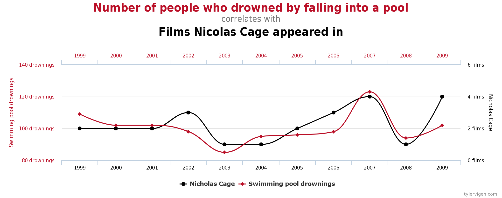 --- class: light 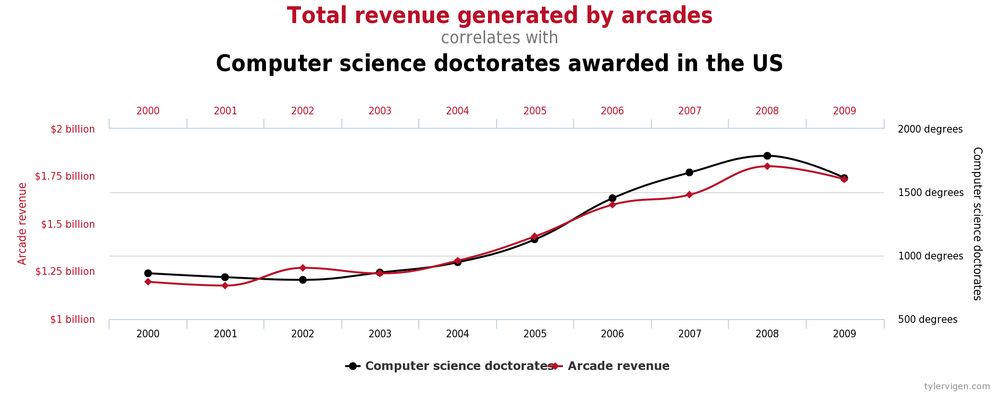 --- class: light 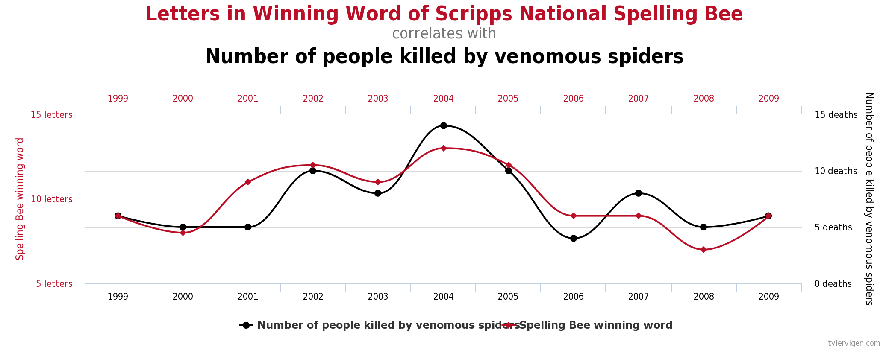 - Check out http://tylervigen.com/discover for more examples! --- class: light, center, middle <img src="images/correlation-xkcd.png" width="300"> --- class: light, # Causal inference .col1[ - **Observation** generally allows for the measurement of correlations between two constructs - **Experiments** (with controls) allow for inference of causality ] .col2[ 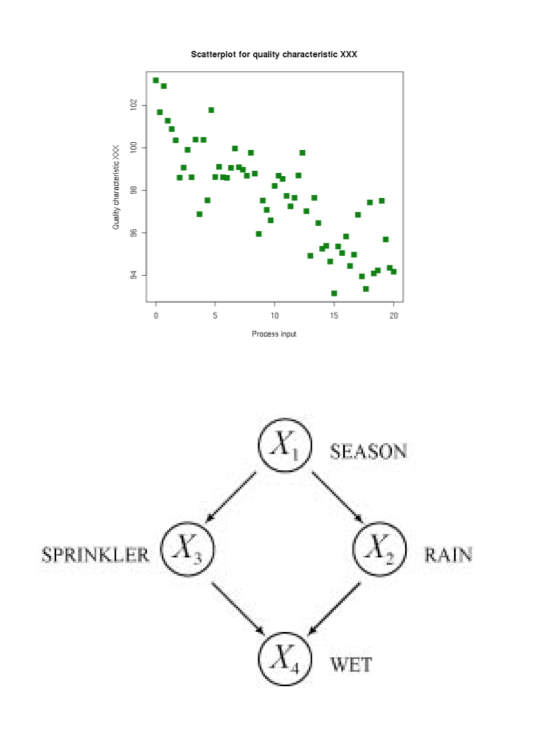 ] --- class: light, # Causal inference .col1[ - **Observation** generally allows for the measurement of correlations between two constructs - **Experiments** (with controls) allow for inference of causality ] .col2[ 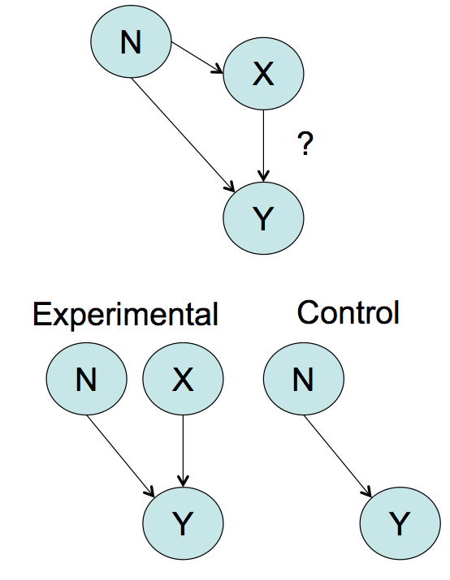 ] --- class: light # Experimental study Directly manipulate one variable and find the consequence on another variable. <br><br> # .black[Two key terms:] .infobox[ **Independent variable** the variable the experimenter changes or manipulates (outside of the subject's control). <hr> **Dependent variable** the variable the experiment is measuring in response to the change. ] --- class: light # Experimental study .infobox[ **Experimental group** One group for which the independent variable is specifically changed. group can be anything (trials in an experiment, different subjects, etc...) ] <br> .infobox[ **Control group** The "no change" or _baseline_ group for the independent variable which was manipulated in the experimental group. For example, in a drug study this is the group not given the drug (e.g., placebo). ] --- class: light # Experimental study Examples: - **Transcranial Magnetic Stimulation (TMS)** We believe some region of frontal cortex is critical for certain types of behavior. Using TMS selectively “deactivate” this region and measure behavior in the task compared to a control. The independent variable is manipulation of the TMS (on/off). The dependent measure is whatever the task involves. - **Category Learning** We think certain types of categories are easier to learn than others. Give each set of subjects a different structure and measure error rate. The independent variables is the problem type. The dependent measure is accuracy or learning rate. --- class: light # Experimental study .infobox[ **Within subject** When the subject is in both the control and experimental condition. Advantages: higher statistical power since you control for individual differences. also more efficient in terms of data collection usually. ] <br> .infobox[ **Between subject** Different participants/subjects in the control and experimental conditions (lower power, but removes confounds of repeated testing). ] --- class: light # Between-subject designs **PROS** - Between better since no "contamination" by other experimental manipulations **CONS** - Requires a lot of people - Individual differences create a lot of variability between groups - Assignment bias: need to control for differences between groups - Other environmental group differences - In other words... **CONFOUNDING VARIABLES** --- class: light # Within-subject designs 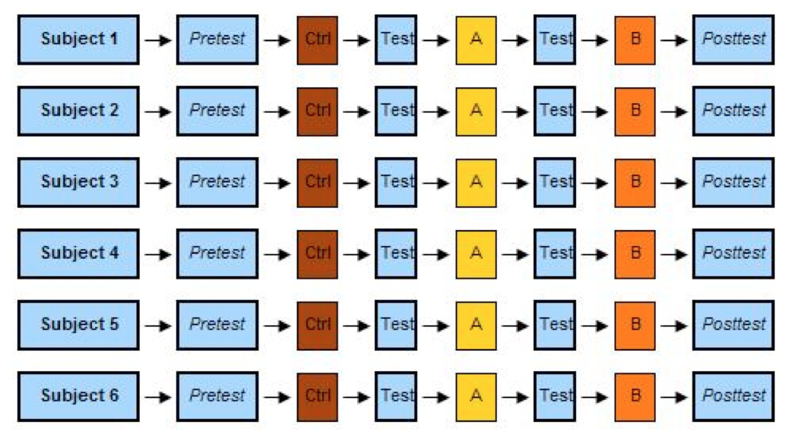 --- class: light # Within-subject designs **PROS** - Eliminates subject variability - Relatively few participants needed due to this savings in variability **CONS** - Carry over effects mean that ordering of conditions can be **CONFOUNDING VARIABLE** - Not always possible from some experimental manipulations --- class: light # How do we deal with confounding variables in experiments? - Measure them - Try to randomize over them (sometimes called **counterbalancing** - more on this next week) - The gold standard for evidence is .blue[RANDOMIZED CONTROL DESIGN] --- class: light .col1[ # What is a randomized controlled design? - People are randomly assigned to different treatment groups under study - Include a control condition which establishes background propensity of effect. ] .col2[ 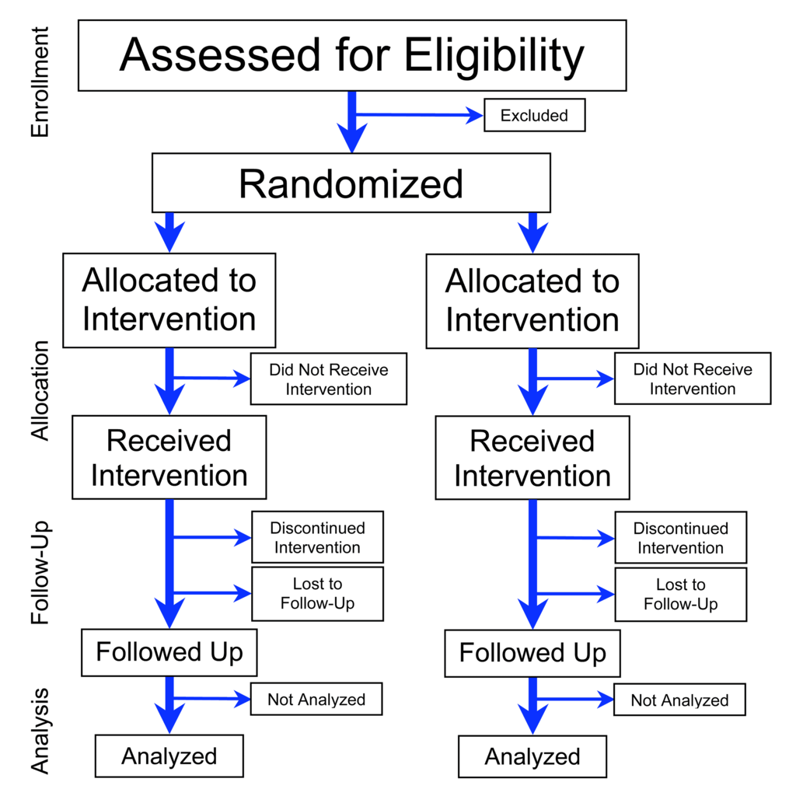 ] --- class: light, middle, center ## Let's consider some example studies. --- class: light, middle, center ## A newspaper headline reads, "Heavy Drinkers Get Lower College Grades." What would you conclude from this headline? What type of study was this based on? -- Likely .blue[correlational] because it would be unethical to perform a randomized control. All one could even possibly conclude is that heavy drinking is _associated_ with poor grades. --- class: light, middle, center ## People remember concrete words better than abstract ones. Could this finding have come from an experiment? Would it be reasonable to infer that concreteness facilitates memory? -- Likely .blue[experimental] assuming words were randomized with within-subject or between-subject. --- class: light, middle, center ## A private school advertises that a group of their students recently scored 10 points higher on a math test than a group of other students from a public school? What can you conclude from this advertisment? Is this an example of an experiment? -- Not an experiment since assignment to group not controlled even though there is direct comparison between two samples. Many possible confounding variables. --- name: basketballexample class: light .col1[ <br><br><br><br> 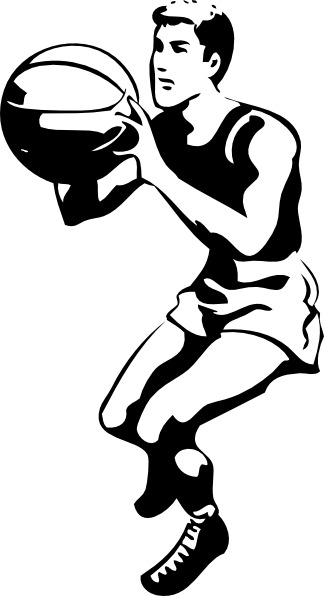 ] .col2[ ] --- class: tuftedata --- class: light, middle ### What makes a good research question? --- name: incBullet class: light # Scientific Method in Six Easy Steps .black[*] 1. See something 1. Think of a reason why. 1. Figure out a way to check your reason. 1. and?? (write it up for a journal) 1. Now, everyone gets to dump on you 1. Repeat until consensus formed .footnote[* inspired by [David Ng](http://boingboing.net/2010/08/23/where-are-all-the-aw.html)]